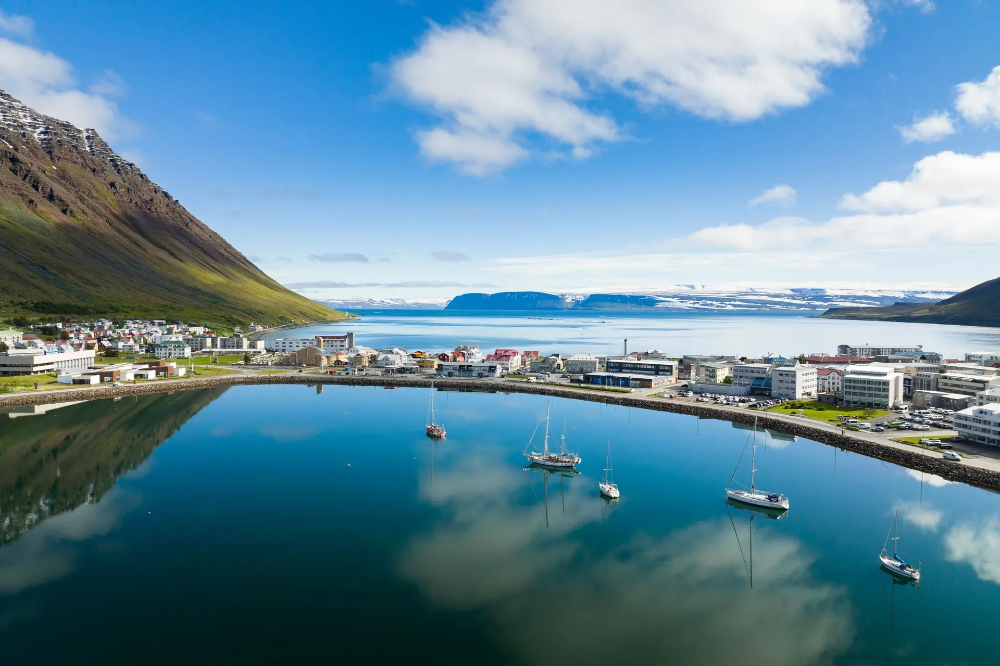

Silfurtorg 2 · on the square
Torg
Thirty-six rooms over the restaurant and the desk: doubles and twins, three triples and one deluxe. Views over Pollurinn or up the fjord.
See the rooms
Hótel Ísafjörður · í hjarta Ísafjarðar
Torg is on Silfurtorg. Horn is a hundred and fifty metres up the road. The old guesthouse and the hostel are on Mánagata, and Torfnes opens for the summer. Logn is on the ground floor, and every guest checks in at the same desk.
Icelandair flies from Reykjavík’s city airport, not Keflavík. The plane comes in low along the fjord and lands on the strip across the water from town. From the airport to the square is a seven-minute drive.
From Reykjavík it is about 450 kilometres, most of a day, along the fjords and through the tunnel at the end. In winter, check the road before you set off.
Expedition ships tie up below the town through the summer, and the boats for Vigur and Hornstrandir leave from the same harbour, a few minutes' walk from the desk.
The square in the middle of town. Torg stands on it, Horn is a hundred and fifty metres up Austurvegur, and the desk at Torg checks in every guest, whichever house they are sleeping in.
Silfurtorg 2
Reception is on the ground floor at Torg and is open all day and all night. Guests at Horn, the guesthouse, the hostel and Torfnes all check in here first.
The ground floor
In 2023 the ground floor was extended by a hundred square metres and the restaurant and reception were rebuilt. Logn seats about 120 now, with the square in the windows.
07:00 to 10:00
Breakfast is served at Torg every morning from seven to ten, for guests from every one of the houses.
On the wall
Over the tables at Logn hangs a painting by Hermann Snorrason of Þuríður, the rock on Óshlíð, the old road to Bolungarvík.
Five houses, all within a ten-minute walk of the square. A hotel room at Torg or Horn, a room in the old guesthouse, a bunk at the hostel, or Torfnes in summer. Whichever you choose, breakfast is at Torg and the desk is the same.
Silfurtorg 2 · on the square
Thirty-six rooms over the restaurant and the desk: doubles and twins, three triples and one deluxe. Views over Pollurinn or up the fjord.
See the roomsAusturvegur 2 · 150 m from the square
Twenty-four rooms in the newest of the houses, with a lift, free parking and lounges on each floor.
See HornMánagata 5 · the old town
The old guesthouse, a timber house on Mánagata with shared bathrooms and a kitchen for guests.
See the guesthouseMánagata 1 · the old town
Bunks and private rooms, a shared kitchen and a lounge, a few doors from the guesthouse.
See the hostelTorfnes · summer only
The summer hotel at the edge of town, by the sports ground, about ten minutes' walk from the square.
See TorfnesThirty-six rooms on the floors above the square, every one with its own bathroom, free WiFi and a flat-screen TV. The upper floors are reached by lift. The whole hotel is non-smoking.
Thirty-two of them
Three of them
The one
On the ground floor at Torg
Logn opened in February 2023 in the new ground floor, and the name is the word for a fjord with no wind on it. Dinner is from six to nine: the fish of the day, the seafood pasta, a rack of lamb, and the burgers named after the mountains, Kubbi and Búrfell. There is Ísafjörður gelato for after. The bar is open through the evening, with a happy hour from four to six.
The airport is across the fjord, a short drive. Everything else is on the Eyri, the spit the town stands on, and the distances below are measured on its own streets at a walking pace with a bag.
Airport Torg
Torg Horn
Torg Gamla Gistihúsið
Torg the hostel
Torg Torfnes
Icelandair flies from Reykjavík’s city airport. The airport is across the fjord from town, about 5.5 km by road, and a taxi from the terminal to the square takes about seven minutes.
About 450 km from Reykjavík. The road conditions are at umferdin.is, and in winter it is worth looking before you leave.
Everything is on foot from the desk. Horn is about 150 metres away, the guesthouse and the hostel about five minutes, Torfnes about ten. Free parking at Horn.
Skutulsfjörður
The town stands on a spit that curls into the fjord, and the water it closes off is called Pollurinn, the pond. On a still day the mountains stand upside down in it. Torg looks straight out over it.
Across the water
The flat-topped mountain at the mouth of the fjord, across from town. The plane turns in front of it on the way down to the strip. Logn named a burger after it.
Óshlíð
The old road to Bolungarvík ran along the cliff at Óshlíð until the tunnel replaced it. Þuríður is the rock that stood over it, and Hermann Snorrason’s painting of it hangs in the dining room at Logn.
Neðstikaupstaður
At the end of the spit stand four timber houses from the 1700s, the oldest cluster of buildings in Iceland, with the maritime museum and a fish restaurant in them. About fifteen minutes on foot from the square.
Torg, on Booking.com
Horn, on Booking.com
Equal pay, certified
Ratings are read from the listings on the dates shown.
Choose the dates and the number of guests, then finish on the hotel’s own booking page, where all five houses are listed with their prices.
The hotel’s own engine, with every house on it: Torg, Horn, the guesthouse, the hostel and Torfnes in season.
+354 456 4111 · lobby@hotelisafjordur.is. Open all day and all night.